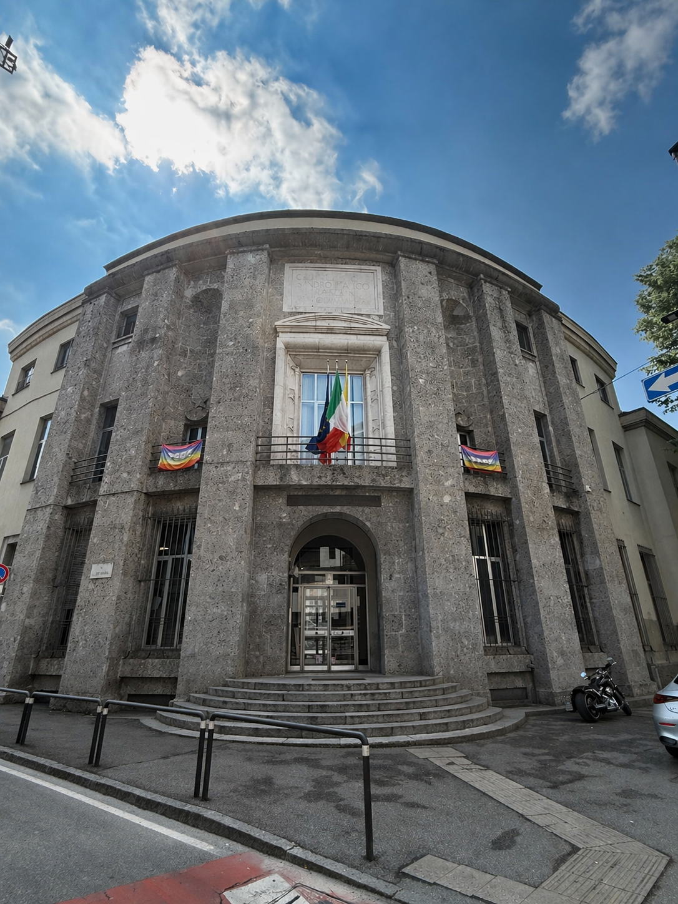

The place
The building that today houses the "Filippo Lussana" State Scientific High School, at Via Angelo Maj 1 in Bergamo, was designed by Alziro Bergonzo (1906-1997), an exponent of Rationalism and a figure closely linked to Fascist architecture in Bergamo.
The building was commissioned to serve as the headquarters of the Opera Nazionale Balilla (ONB) and was inaugurated on 22 June 1932. It later became the seat of the Gioventu Italiana del Littorio (GIL).
On the facade there is still a large plaque dedicated to Sandro Italico Mussolini; in the central part of the building, Fascist symbols in relief are still visible.
Sandro Italico Mussolini was Benito Mussolini's nephew. He died of leukemia at the age of twenty. The dedication on the facade of the building shows the strong symbolic and political value assigned to this place by the Fascist regime.
With the German occupation, the building became the headquarters of the avanguardisti moschettieri, youths aged between 15 and 18 enrolled in the National Republican Guard. Despite their very young age, they were also employed in anti-partisan activities.
The basement rooms still preserve inscriptions that refer to the different uses over time: first changing rooms, then a place of detention and torture, and later a storage area.
After the war, the building became the seat of the "Paolina Secco Suardo" Teacher Training Institute and, from 1968, of the "Filippo Lussana" State Scientific High School.
🎧 Audio Reading
Historical context
Control over schools was one of Fascism's main objectives from the very beginning of the regime. In 1923, with the school reform developed by Giovanni Gentile, classical and humanistic education was presented as the model best suited to prepare the future ruling classes.
Giovanni Gentile (1875-1944) was a philosopher, pedagogue, and Minister of Public Instruction. The 1923 reform deeply reorganized the Italian school system and became one of the main tools through which the regime intervened in education and the ideological formation of younger generations.
From this perspective, school was no longer only a place of instruction, but became an instrument of ideological formation. The goal was not to educate autonomous and aware citizens, but disciplined, obedient individuals fully integrated into the Fascist order.
The building on Via Angelo Maj was created precisely within this logic: not as a simple school building, but as a place dedicated to the control, organization, and formation of youth.
🎧 Audio Reading
In depth: ONB, GIL, and control of youth
The Opera Nazionale Balilla (ONB) and, later, the Gioventu Italiana del Littorio (GIL) were fundamental tools of the Fascist educational project. These organizations worked alongside the school and aimed at the physical, moral, and political education of young people.
All young people aged 6 to 18 were placed in organizations divided by age and gender. See the full breakdown.
For boys:
- Figli della lupa from 6 to 8 years old
- Balilla from 8 to 14 years old
- Avanguardisti from 14 to 18 years old
For girls:
- Figlie della lupa from 6 to 8 years old
- Piccole italiane from 8 to 14 years old
- Giovani italiane from 16 to 18 years old
For boys, activities were largely preparatory to military service; for girls, the regime planned activities connected to parades and public demonstrations, in keeping with the traditional female model imposed by Fascism.
Everyone took part in the Fascist Saturday, which included lessons in Fascist doctrine and gymnastic activities. The regime's control, however, did not stop at school: it also involved leisure time, so as to occupy the whole life of young people.
This system also included other organizations and leisure activities, designed to extend the regime's control beyond the school environment.
Fascist control over youth and society also extended beyond school through:
- Gruppi Universitari Fascisti (GUF) for university students
- Summer camps, organized according to military-style models
- National After-Work organization, which offered leisure and activities for workers
In this way, the distinction between school, leisure time, and private life tended to disappear.
In 1939, the pre-military service was also introduced, further strengthening the military preparation of young people.
In 1939, the pre-military service for young people began, with the obligation to report every Saturday afternoon to their respective neighborhood groups. This step shows explicitly how Fascist education was closely linked to the militarization of youth.
The Fascist educational project soon came into conflict with the Catholic Church, which had its own network of youth associations. In 1928 the regime dissolved non-Fascist youth organizations, including the Scout associations; from the early 1930s the only association still active was Catholic Action, which was however forced to limit its activity to the catechetical sphere alone.
Italian Catholic Action was one of the main lay organizations linked to the Catholic Church. During Fascism it formally remained active, but its presence in the educational and youth sphere was heavily restricted: the regime allowed it to operate only in the religious and catechetical field, in order to avoid competitors in the control of the education of young people.
Overall, the Fascist educational project did not aim to form citizens capable of personal choices and aware of their rights and duties, but to create a "Fascist": disciplined, obedient, physically strong, and loyal to nation and family according to the regime's rhetoric.
🎧 Audio Reading
Why it is a place of memory
Today this building is a public school, but it still preserves clear traces of its past. For this reason it can be considered a place of memory: not only because it recalls historical events, but because it allows critical reflection on the relationship between space, history, and power.
The facade, the plaque, the surviving symbols, and the history of the interior rooms show concretely how Fascism tried to turn education into an instrument of political, social, and moral control.
Walking through these spaces today therefore means confronting a complex memory: that of a place created for the ideological organization of youth and later transformed into a seat of Republican education. Its history invites reflection on how education can be used both to emancipate and to subjugate.
🎧 Audio Reading
Multimedia content

Timeline
- 1923 - Gentile school reform: the school becomes a central instrument of the Fascist educational project.
- 1928 - Fascism dissolves non-Fascist youth organizations, including Scout associations.
- 22 June 1932 - Inauguration of the building on Via Angelo Maj as the headquarters of the Opera Nazionale Balilla.
- 1930s - The building becomes the seat of the Gioventu Italiana del Littorio.
- 1939 - Beginning of pre-military service for young people.
- 1943-1945 - The building houses the avanguardisti moschettieri enrolled in the National Republican Guard.
- Post-war period - Seat of the "Paolina Secco Suardo" Teacher Training Institute.
- 1968 - The building becomes the seat of the "Filippo Lussana" State Scientific High School.
Sources
- Mario Pelliccioli, Itinerari di memoria: un percorso a Bergamo tra fascismo, occupazione tedesca e Resistenza, i Libri di Moltefedi, Bergamo 2023, pp. 24-29.
- Guya Bertelli, Manuela Brambilla, Matteo Invernizzi, Bergamo: cent'anni di architettura 1890-1990, Alcon, Bergamo 1994, pp. 68-69.